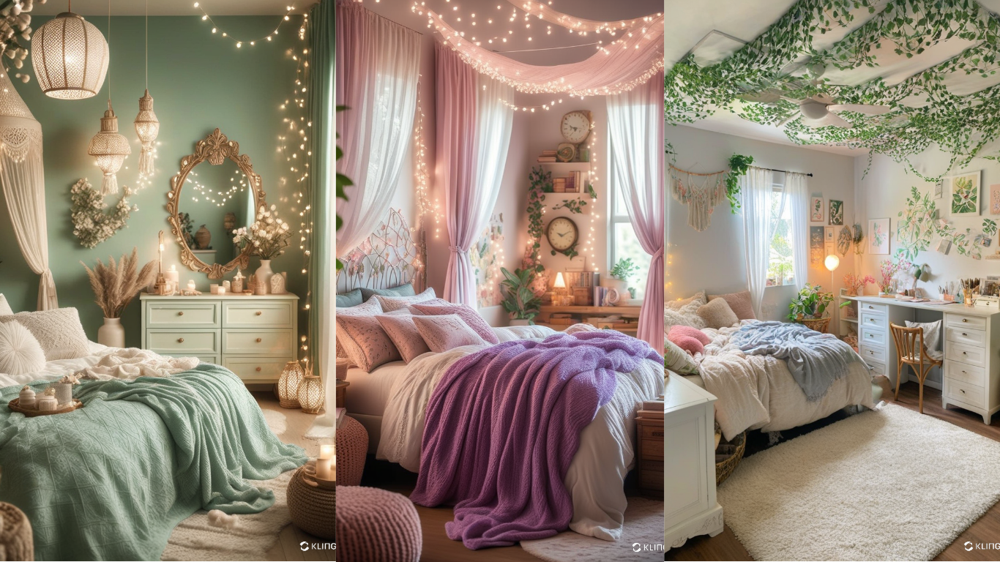

Room Decor Ideas DIY: Transform Your Space on a Budget
Are you looking for creative and budget-friendly ways to spruce up your living space? With DIY room decor ideas, you can personalize your home while saving money. Whether you want to refresh your bedroom, living room, or office, these innovative ideas will help you create a stylish and cozy atmosphere without breaking the bank.
1. DIY Wall Art
Wall art is one of the easiest ways to enhance your room’s aesthetic. Instead of buying expensive paintings, create your own art pieces. Use canvas, acrylic paints, and stencils to design abstract art. Alternatively, frame fabric scraps, wallpaper samples, or pressed flowers for a unique touch.
2. Creative Lighting Solutions
Lighting plays a crucial role in setting the mood of a room. Try making your own lampshades using fabric or decorative paper. String lights can add a warm ambiance—wrap them around a mirror or drape them across the ceiling for a dreamy effect. Mason jar lanterns also make for an easy and stylish DIY project.
3. Upcycled Furniture
Revamp old furniture with a fresh coat of paint or new hardware. Chalk paint is a great option for giving dressers, nightstands, or bookshelves a vintage look. You can also use decoupage techniques to add patterns and textures to furniture surfaces.
4. DIY Shelving and Storage
Maximize your space with custom-made storage solutions. Floating shelves made from reclaimed wood can add both function and style to your walls. Consider repurposing wooden crates or baskets for stylish storage. Pegboards are also a great way to organize and display decorative items.
5. Handmade Throw Pillows and Blankets
Add warmth and personality to your room with DIY throw pillows and blankets. Sew pillow covers using vibrant fabrics or repurpose old sweaters. For an easy no-sew option, use fabric glue or iron-on hemming tape. Knitting or crocheting a chunky throw blanket is another fantastic way to introduce texture and coziness.
6. Indoor Plants and Greenery
Bring nature indoors by incorporating plants into your decor. Create your own plant pots using terracotta pots, paint, and stencils. Hanging planters made from macramé or repurposed jars add a trendy touch to any space. Succulents and air plants are low-maintenance options that can instantly elevate a room.
7. Customized Mirror Frames
Transform a plain mirror into a statement piece by adding a decorative frame. Use driftwood, rope, or mosaic tiles for a unique design. This simple upgrade can make your space feel larger and more elegant.
8. DIY Headboards
Upgrade your bedroom with a custom headboard. You can use reclaimed wood, fabric panels, or even wallpaper to create a stylish and personalized headboard. This project adds character to your space without the cost of purchasing a new bed frame.
9. Gallery Wall and Photo Displays
Curate a gallery wall using framed photos, prints, and DIY art. Arrange pieces in a cohesive layout to create a focal point. If you prefer a minimalist approach, use photo clips or wire grids to display pictures without frames.
10. Scented DIY Candles and Diffusers
Enhance the ambiance of your space with handmade candles and essential oil diffusers. Melt soy wax, add your favorite scents, and pour into decorative jars. Reed diffusers with natural oils can also add a refreshing aroma to any room.
Final Thoughts
DIY room decor ideas allow you to infuse personality and creativity into your space while staying on budget. From handmade artwork to upcycled furniture and cozy textiles, these projects are simple yet impactful. Start your DIY journey today and transform your home into a stylish and inviting retreat!